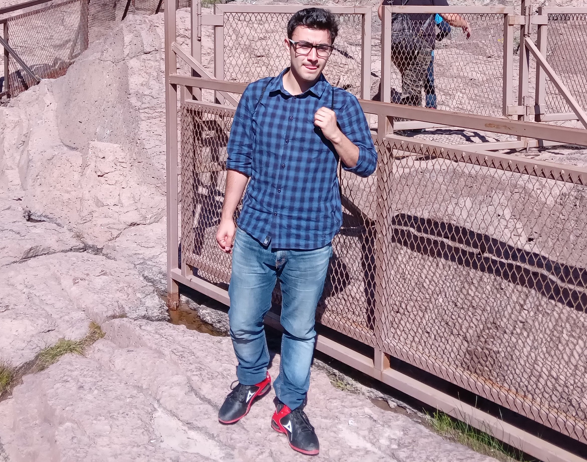
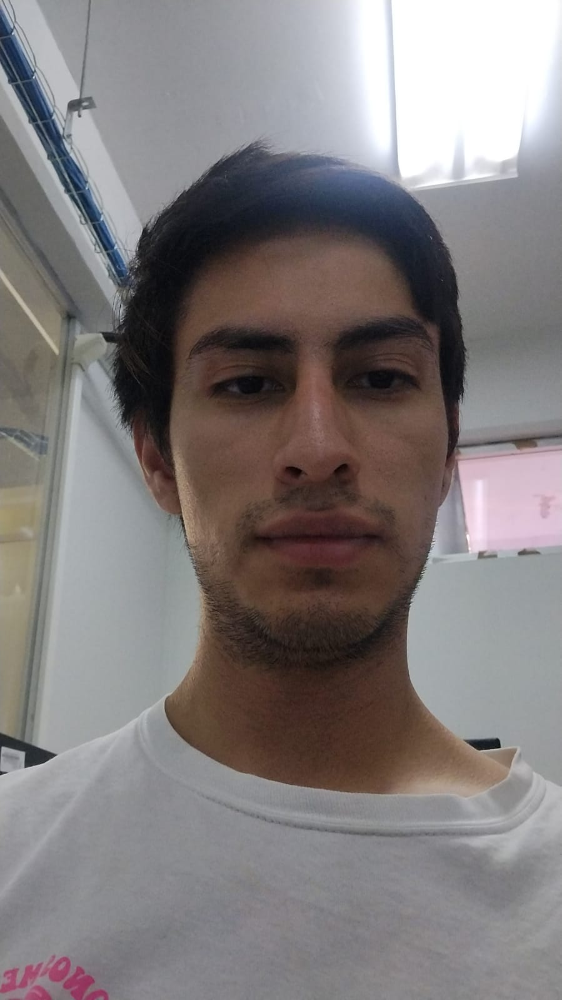

Programar para mejorar
En Brasco, nuestra principal misión es proporcionar soluciones óptimas a nuestros clientes a través del desarrollo de software de vanguardia. Nos enorgullece ofrecer un servicio de alta calidad que se centra en la excelencia y en brindar la mejor experiencia posible a quienes confían en nosotros para resolver sus desafíos tecnológicos.
Soy una persona apasionada por el diseño y la interactividad en todo lo que hago. Para mí, la estética y la funcionalidad son dos aspectos inseparables que dan vida a cualquier proyecto. Me encanta explorar nuevas formas de comunicación visual y crear experiencias que cautiven y sorprendan a los usuarios.
Soy una persona creativa y altamente interesada en mis clientes. Mi enfoque en la creatividad se refleja en cada aspecto de mi trabajo. Siempre busco nuevas y emocionantes formas de abordar los desafíos y de satisfacer las necesidades de mis clientes.
Soy una persona que busca constantemente desafíos y se esfuerza por encontrar la mejor solución posible. Considero que los desafíos son oportunidades para crecer y aprender, y me emociona enfrentar problemas complicados.